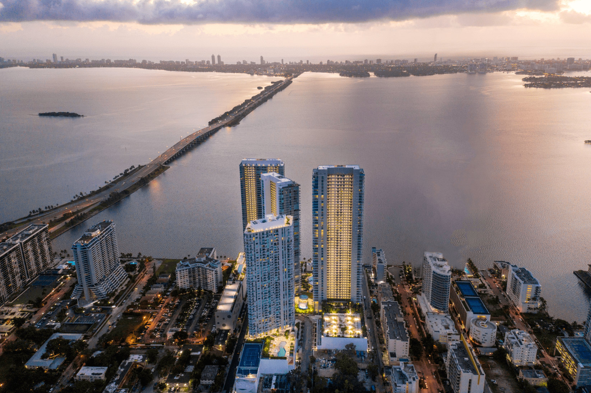
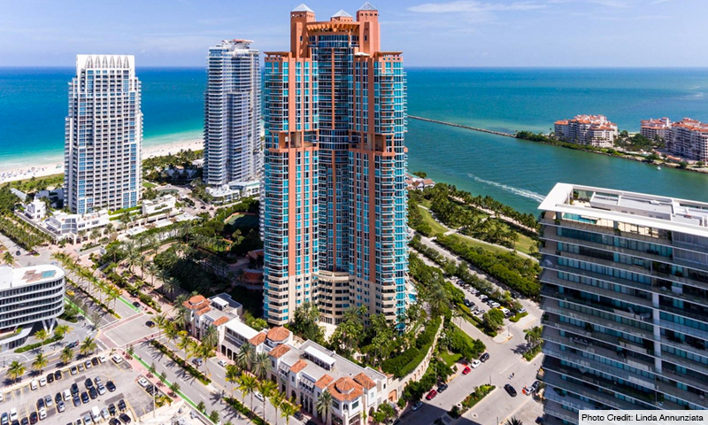

Din 2016, GREY Properties a îmbunătățit orizonturile cu dezvoltări emblematice caracterizate prin design inovator, calitate durabilă și viață incluzivă. GREY Properties este principalul investitor și dezvoltator ecologic de imobiliare rezidențiale, mixte, comerciale și de birouri din București, Mamaia, Năvodari și Miami. Compania este cunoscută sub brandul high-end GREY, sinonim cu calitate, design, comunitate, durabilitate și locații extrem de dorite.
DESPRE NOI


Răspunzând cerințelor și dorințelor unei noi generații, GREY Properties continuă să depășească așteptările rezidenților și comunităților la fiecare pas. Urmând conducerea fondatorului, încearcăm să educăm și să inspirăm, încorporând artă și experiențe culturale demne de remarcat pe parcursul dezvoltării sale. Proprietățile înrudite au fost recunoscute în repetate rânduri pentru designul lor vizionar și dezvoltarea inovatoare a condominiilor de lux, închirieri la prețul pieței, centre cu utilizare mixtă și proprietăți la prețuri accesibile.